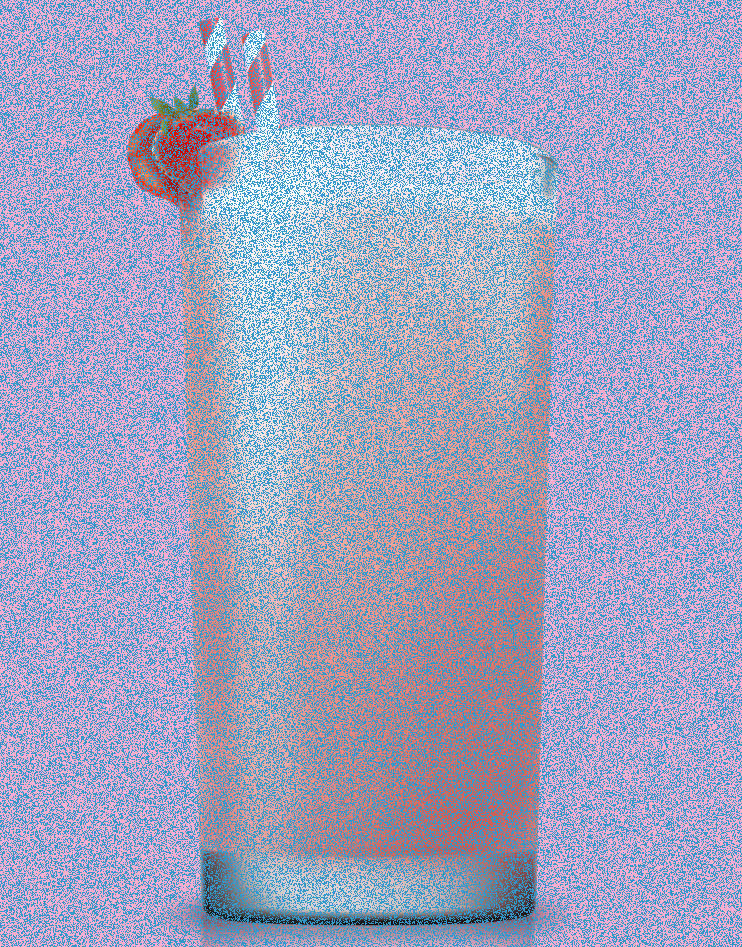

Editor's Note: Sweeties is a section that most cocktails are in low alchol level. Don't be scared. Feel free to try.
Alcohol free, or non-alcoholic beverages, are non-alcoholic versions of typically alcoholic beverages. These may take the form of a non-alcoholic mixed drink (a "virgin drink"), non-alcoholic beer ("near beer") and "mocktails", and are widely available where alcoholic beverages are sold.
Mocktail is a clever invention. It humorously rhymes with cocktail, but has a semantically appropriate first syllable. Mocktails are literally mock cocktails, with the sense of mock in mock chicken or mock turtle soup. The -tail of the second syllable of mocktail, however, has acquired a new meaning-that of the unshortened (and unadulterated) cocktail.
Philip Kolin says: The coinage mocktail appears for the first time, I believe, in an advertisement for Libbey Glass in Food Service Marketing (Feb. 1979, p. 76). According to that ad, mocktails “are a relatively new group of beverages prepared without any alcohol whatsoever.”